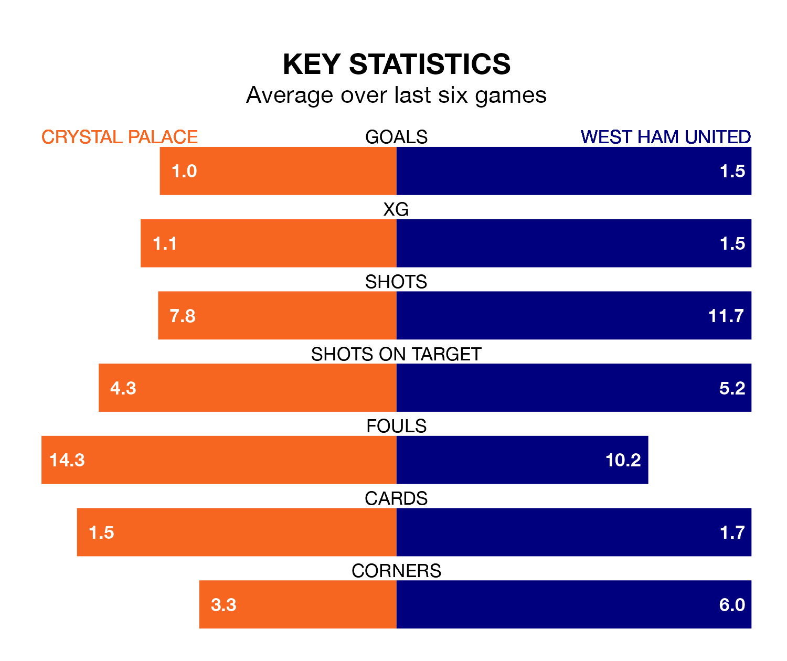

Crystal Palace host West Ham United on Sunday at Selhurst Park in the Premier League.
In their last league match, on April 14, Palace beat Liverpool 1-0 away, with their goal scored by Eberechi Eze.
West Ham lost, 2-0 at home against Fulham.
In the last 10 years, Palace and West Ham have played each other on 19 occasions. Palace won five of them, West Ham seven, and they drew seven times.
On average, the Eagles scored 1.6 goals and the Hammers 1.9 in those matches.
Their last meeting was on December 3, when they played out a 1-1 draw.
With 37 goals in 32 games so far this season, Palace are scoring at below the league average rate with 1.2 goals per game. And they are conceding more than average, letting in 54 goals at a rate of 1.7 per game.
West Ham, meanwhile, are average scorers, with 1.6 goals per game. They have conceded 1.8 goals per game.
The Eagles are in disappointing form in the Premier League, with one win and two draws from their last six games.
With a win and three draws over that period, United's form is slightly better – they have taken six points from 18, compared to the hosts' five.
Palace are 15th in the table after 32 games, of which they have won eight and drawn nine, earning 33 points.
The Hammers are seven places ahead of Palace in eighth, with 13 wins and nine draws putting them on 48 points.
In Jarrod Bowen, the away side have one of the league's most on-form strikers so far this season. He has notched 15 goals in 31 appearances, to sit seventh in the scoring charts.
The Eagles's top scorers, with seven goals each, are Odsonne Édouard, Eze and Jean-Philippe Mateta.
Updated: 11:31 (UTC), 15/04/24